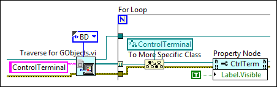
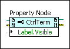
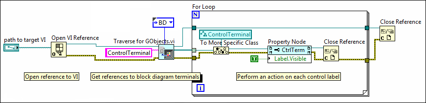

You can use the VI Scripting VI and functions with the associated properties and methods to create, edit, and run VIs programmatically. With VI Scripting, you can reduce the amount of time you spend on repetitive VI editing tasks, such as:
|
Note��You must enable VI Scripting to use the VI Scripting VI and functions. |
Prior to completing tasks using VI Scripting, consider reviewing the following resources:
 Find related examples
Find related examples
You can use VI Scripting to complete simple and complex tasks ranging from displaying or hiding control labels to creating entire VIs programmatically. For example, if you decide to display block diagram labels during development, rather than selecting each block diagram object, right-clicking, and selecting Visible Item�Label from the shortcut menu throughout the application, you can automate the process by writing a VI that utilizes VI Scripting to programmatically complete the task.
The following block diagram shows an example of a VI Scripting application that displays the labels of block diagram objects on a specified VI.

A more complex example of a VI Scripting task is creating entire VIs programmatically. Typically, you create a VI using a process similar to the following steps.
If you need to create multiple VIs that differ slightly, rather than using the previous manual process to create each one, you can create a VI Scripting application to programmatically create the new VIs, each with the modifications you need.
After you enable VI Scripting, you can use the VI and functions on the VI Scripting palette in conjunction with the functions and nodes on the Application Control palette to create VI Scripting applications.
|
Note��The VI Scripting VI, functions, properties, and methods appear blue on the block diagram as shown in the following image.  |
For each VI Scripting application, you must obtain a reference to the object, or objects, you want to create or modify. The most common way to obtain a reference to an object is to begin by obtaining a reference to the VI that contains the object you want to modify. You can create a new VI and obtain a reference to the VI using the New VI function, or you can obtain a reference to an existing VI using the Open VI Reference function. After you obtain the VI reference, you can use the VI and functions on the VI Scripting palette in conjunction with the functions and nodes on the Application Control palette to obtain references to VI objects.
When you interact with complex VI objects, you must obtain references to specific elements of those objects. For example, to create a new wire that enters a For Loop, you must obtain references to the loop itself, a new loop tunnel, and the inner and outer terminals of the loop tunnel. Refer to the Anatomy of a VI and Common VI Objects topic to identify specific elements of an object you want to create or edit with VI Scripting. If you obtain references to VI objects that are contained within another VI object, be sure to retain the reference to the container object until all references inside the object are closed.
The following image demonstrates one possible way to obtain a VI reference and then obtain references to block diagram objects in the referenced VI.

You can identify objects in a VI by their class name, data type, label, tag, or array index. The following functions and nodes are common ways to identify objects and obtain object references to use in a VI Scripting application:
|
Note��Block diagram objects do not display a label by default. To use the Open VI Object Reference function to obtain a reference to an object, you must display the label first. If you intend to use object labels to obtain references, create distinct and identifiable labels to help you locate the correct object. |
|
Note��The All Objects[] property does not search container objects recursively. To search all objects in a VI, use the All Objects[] property on each container object including the front panel, the block diagram, structures, and arrays. |
Some common tasks you might complete in a VI Scripting application include the following:
Refer to the examples in the labview\examples\Application Control\VI Scripting folder for examples that demonstrate these tasks.
Find related examples